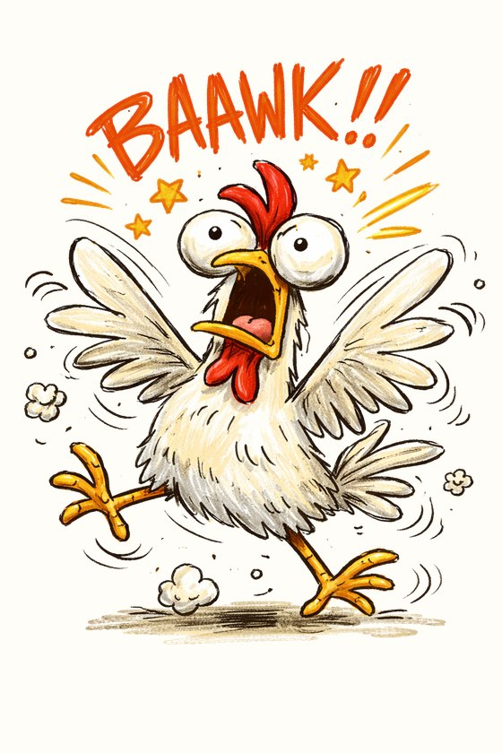
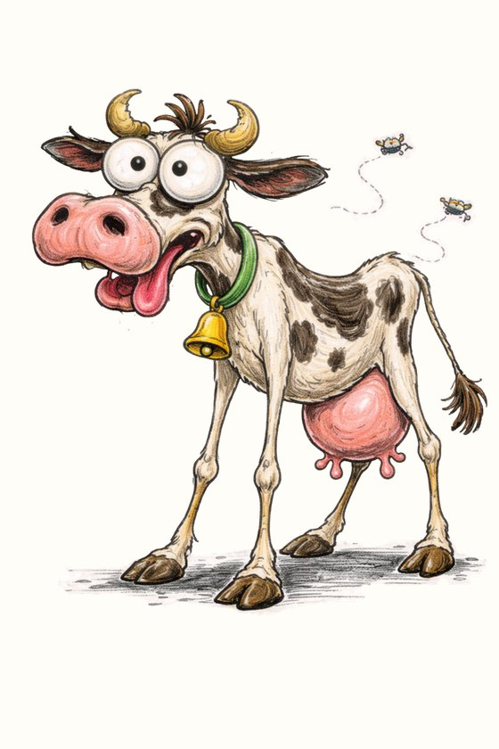
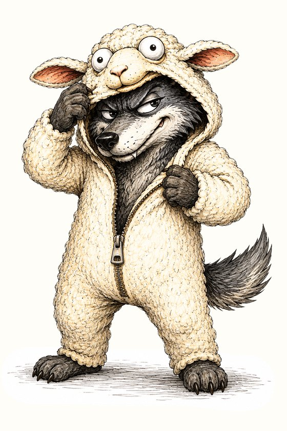
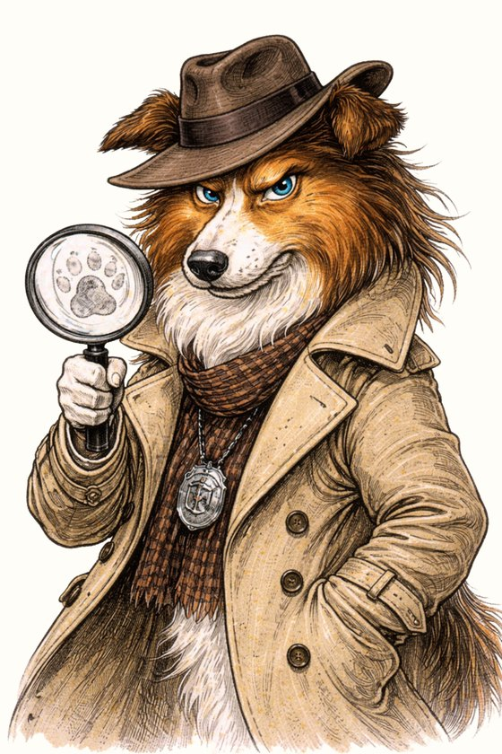

Farm animals
Chickens, cows, rabbits, horses, and more familiar faces.
friends ✳Meet the friends, learn the secrets, and make your next game night a little more mysterious.
Apply HAYBALE10 at checkout for 10% off.


From farmyard friends to wild animals in disguise, every card brings a new part to the story.

Chickens, cows, rabbits, horses, and more familiar faces.
friends ✳
Wolves, foxes, and other clever characters with secret plans.
hmm...?
Unexpected helpers with a little extra to bring to the game.
aha!For 4–30 players, plus a separate storyteller. The game includes 30 cards, instructions, and a notepad in a cardboard box.
Players sit in a circle. The separate storyteller gives each player one secret card. Keep your role hidden from the other players.
Close your eyes and follow the storyteller’s prompts as roles act secretly. The impostors choose a player to eliminate. Special roles use their abilities when called.
Discuss who might be a wild animal, then vote to remove a suspect. The player with the most votes is voted out.
Repeat the night and day sequence until all wild animals have been voted out, or the wild animals remaining equal the farm animals remaining.
Tied vote: The rules provided do not specify a tie-break.
Send a pre-order request for the physical board game with cards. The limited run is 1,000 copies; Karin will confirm availability, delivery, and payment. No payment is taken online.